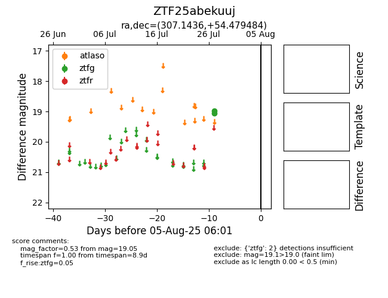

Target ZTF25abekuuj at 2025-08-05 06:01, see:
FINK: fink-portal.org/ZTF25abekuuj
Lasair: lasair-ztf.lsst.ac.uk/objects/ZTF25abekuuj
ALeRCE: alerce.online/object/ZTF25abekuuj
alt names
ZTF25abekuuj (ztf,fink)
coordinates:
equatorial (ra, dec) = (307.1436,+54.47948)
galactic (l, b) = (90.4954,+9.11836)
photometry
last ztfg=19.05
2 ztfg detections
